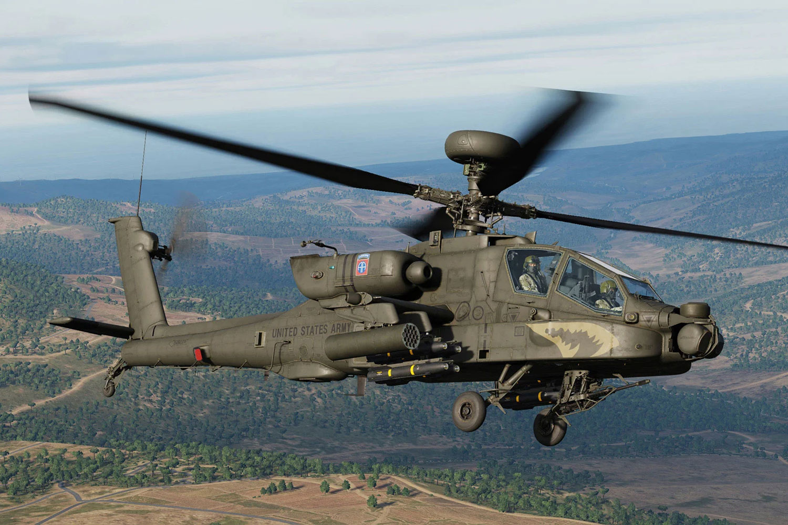
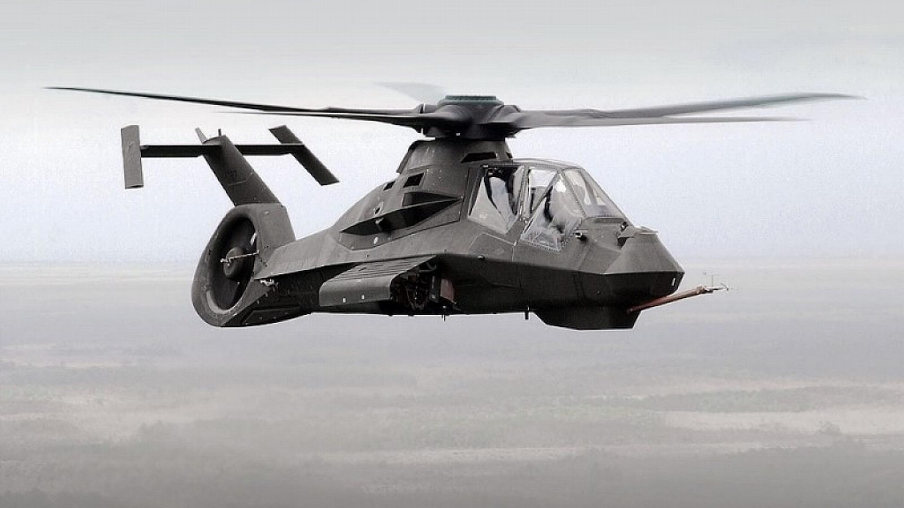
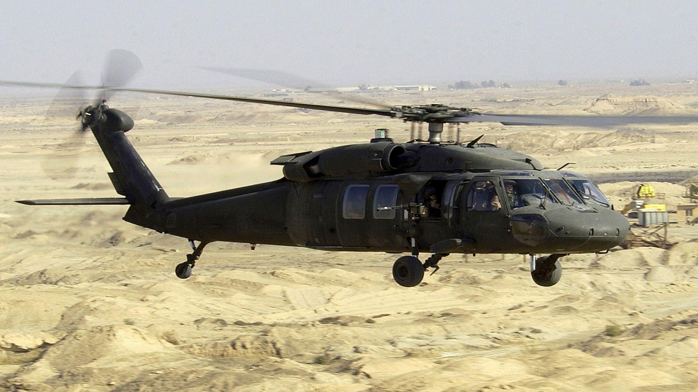
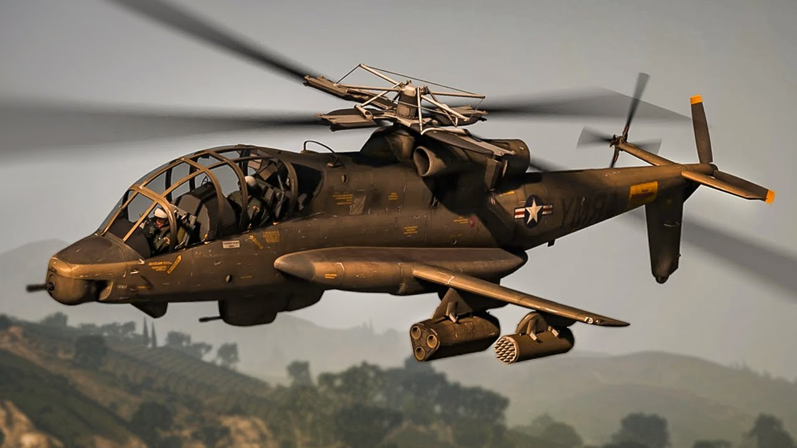
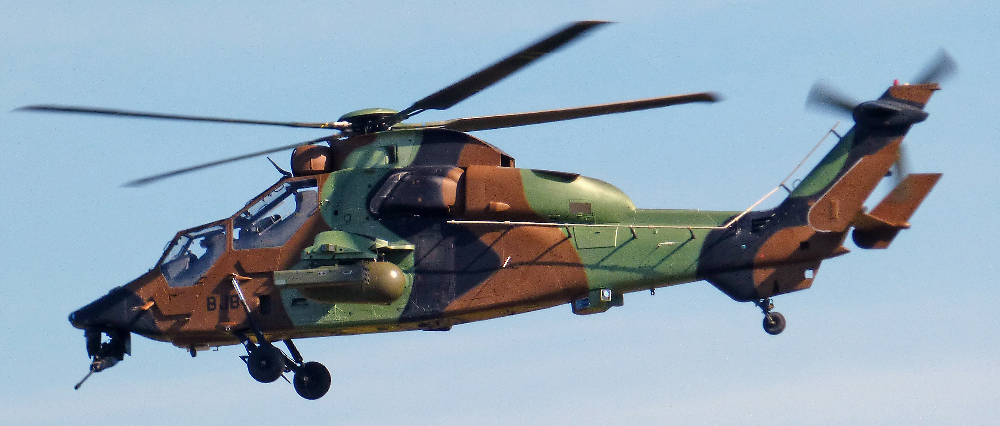
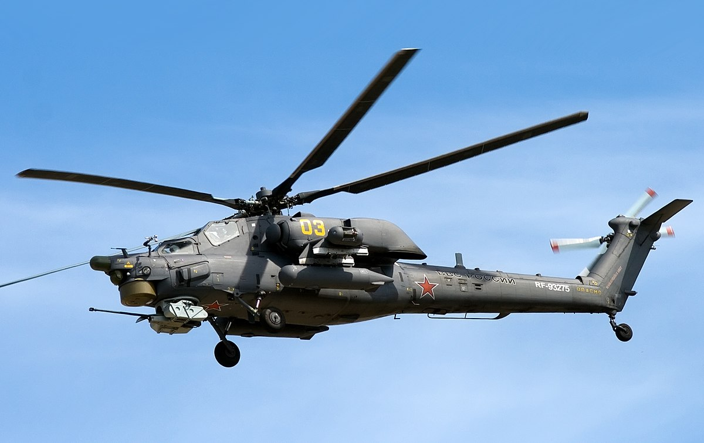
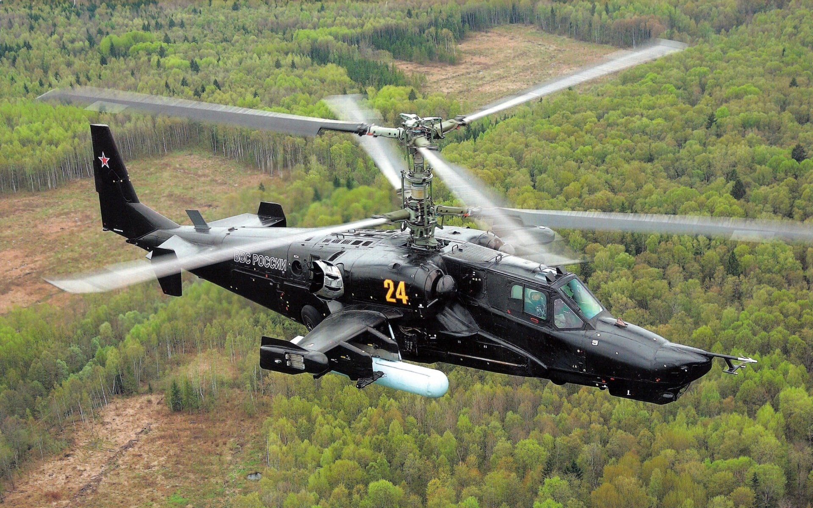

AH-64 Apache

AH-64 Apache – podstawowy śmigłowiec szturmowy United States Army, przeznaczony do zwalczania broni pancernej i wspierania oddziałów lądowych.
Został opracowany przez Hughes Helicopters, przejęty następnie przez McDonnell Douglas. Zakłady te zostały później wykupione przez firmę Boeing Company.
Jego poprzednikiem był Bell AH-1 Cobra.
W 1972 r. U.S. Army ogłosiła przetarg na Advanced Attack Helicopter (zaawansowany helikopter szturmowy).
Swoje propozycje zgłosiło 5 firm, a do finału zakwalifikowano Toolco Aircraft Division koncernu Hughes Aircraft (później Hughes Helicopters) Model 97/YAH-64 i Bell Helicopter Textron Model 409/YAH-63.
W 1976 wybrano projekt Hughesa. Pierwszy lot prototypu odbył się 30 września 1975 r.
Kontrakt na produkcję podpisano dopiero w 1982, a rok później w zakładach Hughes Helicopters w Mesa (Arizona) wyprodukowano pierwszy seryjny egzemplarz.
W 1984 Hughes Helicopters został zakupiony przez McDonnell Douglas za kwotę 500 milionów dolarów i producentem śmigłowca stał się McDonnell Douglas.
W 1996 r. McDonnell Douglas połączył się z Boeingiem.
Czytaj dalej...
Jeśli chcesz zobaczyć video z B-2 w akcji, kliknij ten przycisk -->
Jeśli chcesz zobaczyć video z B-2 w akcji, kliknij ten przycisk -->
RAH-66 Comanche

RAH-66 Comanche – amerykański śmigłowiec szturmowo-rozpoznawczy zaprojektowany w kooperacji przez wytwórnie Boeing i
Sikorsky Aircraft Corporation, jako następca maszyn poprzedniej generacji AH-1 Cobra, OH-58 Kiowa i Hughes OH-6A Cayuse oraz uzupełnienie AH-64 Apache.
RAH-66 Comanche został zbudowany w technologii stealth i był jednym z
najnowocześniejszych śmigłowców bojowych świata, do momentu zamknięcia programu rozwojowego 23 lutego 2004 roku. Program ten pochłonął 48,1 mld USD.
Konstrukcja śmigłowca RAH-66 Comanche wywodzi się z rozpoczętego w 1983 roku programu lekkiego śmigłowca eksperymentalnego LHX (ang. Light Helicopter Experimental), który miał być maszyną tanią i prostą w budowie, budowaną w wersjach rozpoznawczej, transportowej i szturmowej. Początkowo planowano, że wszystkie maszyny LHX będą jednomiejscowe, ale w 1988 zmieniono koncepcję wprowadzając dwumiejscową kabinę w układzie tandem jednocześnie redukując prognozowaną liczbę zamówionych śmigłowców z 4292 na 2096. Nieustanny wzrost kosztów projektu doprowadził do następnej redukcji zamówienia do 1213 maszyn, a później do kolejnych redukcji spowodowanych także cięciami budżetowymi.
Pierwszy śmigłowiec RAH-66 Comanche został wytoczony z hangaru wytwórni Sikorsky Aircraft w Stratford w stanie Connecticut 25 maja 1995 roku, a oblatany 4 stycznia 1996. Ze względu na niedostatek funduszy testy w locie przebiegały bardzo powoli i do września 1998 roku wykonano tylko 105 godzin lotów próbnych. Druga maszyna prototypowa została ukończona w 1998 roku. Czytaj dalej...
Konstrukcja śmigłowca RAH-66 Comanche wywodzi się z rozpoczętego w 1983 roku programu lekkiego śmigłowca eksperymentalnego LHX (ang. Light Helicopter Experimental), który miał być maszyną tanią i prostą w budowie, budowaną w wersjach rozpoznawczej, transportowej i szturmowej. Początkowo planowano, że wszystkie maszyny LHX będą jednomiejscowe, ale w 1988 zmieniono koncepcję wprowadzając dwumiejscową kabinę w układzie tandem jednocześnie redukując prognozowaną liczbę zamówionych śmigłowców z 4292 na 2096. Nieustanny wzrost kosztów projektu doprowadził do następnej redukcji zamówienia do 1213 maszyn, a później do kolejnych redukcji spowodowanych także cięciami budżetowymi.
Pierwszy śmigłowiec RAH-66 Comanche został wytoczony z hangaru wytwórni Sikorsky Aircraft w Stratford w stanie Connecticut 25 maja 1995 roku, a oblatany 4 stycznia 1996. Ze względu na niedostatek funduszy testy w locie przebiegały bardzo powoli i do września 1998 roku wykonano tylko 105 godzin lotów próbnych. Druga maszyna prototypowa została ukończona w 1998 roku. Czytaj dalej...
UH-60 Black Hawk

UH-60 Black Hawk – średni wielozadaniowy amerykański śmigłowiec transportowy i wsparcia piechoty zbudowany przez Sikorsky Aircraft Corporation.
Maszyna jest napędzana dwoma turbowałowymi silnikami poruszającymi jeden wirnik nośny.
Śmigłowce serii UH-1 Huey wykorzystywano w armii amerykańskiej podczas wojny w Wietnamie, ale gdy konflikt ten zaczynał przybierać coraz większe rozmiary w połowie lat 60. dowództwo armii zdecydowało o zastąpieniu go nowocześniejszą maszyną. Na początku następnej dekady uznano program nowego śmigłowca za priorytetowy, ogłaszając w styczniu 1972 program Utility Tactical Transport Aircraft System (UTTAS) – system taktycznego transportu powietrznego. Założeniem programu była budowa śmigłowca o znacznie lepszych parametrach lotnych, niższych kosztach utrzymania i większej przeżywalności na polu walki.
W sierpniu do finału konkursu dotarły dwa typy maszyn, Boeing-Vertol YUH-61 i Sikorsky YUH-60. Każdy z producentów przygotował po dwa egzemplarze śmigłowców do testów naziemnych i po trzy do prób w locie. Wśród maszyn przedstawionych przez Sikorskyego znalazły się śmigłowce zbudowane na bazie transportowych S-61 i S-65, oraz bojowego S-67. Czytaj dalej...
Śmigłowce serii UH-1 Huey wykorzystywano w armii amerykańskiej podczas wojny w Wietnamie, ale gdy konflikt ten zaczynał przybierać coraz większe rozmiary w połowie lat 60. dowództwo armii zdecydowało o zastąpieniu go nowocześniejszą maszyną. Na początku następnej dekady uznano program nowego śmigłowca za priorytetowy, ogłaszając w styczniu 1972 program Utility Tactical Transport Aircraft System (UTTAS) – system taktycznego transportu powietrznego. Założeniem programu była budowa śmigłowca o znacznie lepszych parametrach lotnych, niższych kosztach utrzymania i większej przeżywalności na polu walki.
W sierpniu do finału konkursu dotarły dwa typy maszyn, Boeing-Vertol YUH-61 i Sikorsky YUH-60. Każdy z producentów przygotował po dwa egzemplarze śmigłowców do testów naziemnych i po trzy do prób w locie. Wśród maszyn przedstawionych przez Sikorskyego znalazły się śmigłowce zbudowane na bazie transportowych S-61 i S-65, oraz bojowego S-67. Czytaj dalej...
AH-56 Cheyenne

Lockheed AH-56 Cheyenne – amerykański, prototypowy śmigłowiec szturmowy firmy Lockheed. Maszyna powstała na zamówienie US Army w ramach konkursu AAFSS
(Advanced Aerial Fire Support System). Główny nacisk w konstrukcji śmigłowca położono na zdolność osiągania dużej prędkości lotu.
Charakterystyczną cechą konstrukcji śmigłowca były dwa śmigła ogonowe. Jedno ustawione równolegle do belki ogonowej, spełniające rolę klasycznego śmigła kompensującego moment
obrotowy kadłuba a drugie, na końcu belki, zamontowane prostopadle do osi kadłuba, pełniące rolę śmigła pchającego, umożliwiającego osiąganie w locie dużej prędkości maksymalnej.
Historia amerykańskich śmigłowców szturmowych wiąże się nierozerwalnie z wojną w Wietnamie. To podczas tego konfliktu na niespotykaną dotąd skalę użyto w działaniach bojowych śmigłowców. Już pierwsze doświadczenia pokazały potrzebę posiadania wyspecjalizowanej maszyny, zdolnej do zapewnienia wsparcia ogniowego własnym jednostkom na lądzie, wypełniania zadań szturmowych, a przy tym zdecydowanie bardziej odpornej na ogień przeciwnika niż używany w tej roli Bell UH-1 Huey. Pierwszą udaną próbą zbudowania takiej maszyny był Bell AH-1 Cobra. Cobra powstała w wyniku daleko posuniętej modyfikacji UH-1. Pierwszym, całkowicie oryginalnym programem budowy nowego śmigłowca szturmowego był ogłoszony w 1964 roku przez Sekretarza Armii Lądowej Stanów Zjednoczonych konkurs Advanced Aerial Fire Support System (AAFSS). Czytaj dalej...
Historia amerykańskich śmigłowców szturmowych wiąże się nierozerwalnie z wojną w Wietnamie. To podczas tego konfliktu na niespotykaną dotąd skalę użyto w działaniach bojowych śmigłowców. Już pierwsze doświadczenia pokazały potrzebę posiadania wyspecjalizowanej maszyny, zdolnej do zapewnienia wsparcia ogniowego własnym jednostkom na lądzie, wypełniania zadań szturmowych, a przy tym zdecydowanie bardziej odpornej na ogień przeciwnika niż używany w tej roli Bell UH-1 Huey. Pierwszą udaną próbą zbudowania takiej maszyny był Bell AH-1 Cobra. Cobra powstała w wyniku daleko posuniętej modyfikacji UH-1. Pierwszym, całkowicie oryginalnym programem budowy nowego śmigłowca szturmowego był ogłoszony w 1964 roku przez Sekretarza Armii Lądowej Stanów Zjednoczonych konkurs Advanced Aerial Fire Support System (AAFSS). Czytaj dalej...
EuroCopter Tiger

Eurocopter Tiger – dwusilnikowy, dwumiejscowy, wąskokadłubowy śmigłowiec szturmowy opracowany przez europejskie konsorcjum Eurocopter.
W Niemczech znany jako Tiger, we Francji i Hiszpanii jako Tigre. Występuje także pod oznaczeniami EC665 i PAH-2.
W 1984 rządy Francji i Niemiec określiły wymagania na nowy wielozadaniowy śmigłowiec bojowy.
Do opracowania nowej konstrukcji powołano joint venture składające się z firm Aerospatiale i MBB.
Z powodu wysokich kosztów program anulowano w 1986 aby w następnym roku go reaktywować. W listopadzie 1989 Eurocopter otrzymał kontrakt na budowę pięciu prototypów.
Trzy egzemplarze były nieuzbrojone i przeznaczone do testów w locie, jeden opracowano w wersji przeciwpancernej dla Niemiec a jeden w wersji eskortowej dla Francji.
14 stycznia 2013 francuska DGA wydała certyfikat dla wersji Tiger HAD. 19 kwietnia 2013 Francja odebrała pierwszą maszynę w wersji HAD.
4 marca 2013 w Bawarii rozbił się niemiecki Tiger UHT wykonujący lot szkoleniowy nad górami.
26 lipca 2017 rozbił się jeden z dwu niemieckich Tigerów biorących udział w misji ONZ w Mali. Czytaj dalej...
14 stycznia 2013 francuska DGA wydała certyfikat dla wersji Tiger HAD. 19 kwietnia 2013 Francja odebrała pierwszą maszynę w wersji HAD.
4 marca 2013 w Bawarii rozbił się niemiecki Tiger UHT wykonujący lot szkoleniowy nad górami.
26 lipca 2017 rozbił się jeden z dwu niemieckich Tigerów biorących udział w misji ONZ w Mali. Czytaj dalej...
Mi-28 Havoc

Mi-28 (oznaczenie NATO Havoc) – rosyjski dwumiejscowy śmigłowiec szturmowy w układzie tandem (piloci siedzą jeden za drugim).
Powstał jako odpowiednik amerykańskiego śmigłowca Apache, głównym jego przeznaczeniem jest niszczenie czołgów.
Prototyp Mi-28 wykonał pierwszy lot w 1982. W 1984 lotnictwo wojskowe ZSRR na podstawowy śmigłowiec przeciwpancerny wybrało konkurencyjną konstrukcję Kamowa Ka-50. Prace nad Mi-28 kontynuowano, jednak ich natężenie wyraźnie osłabło. W 1988 podjęto decyzję o rozpoczęciu produkcji w zakładach Rostwiertoł w Rostowie nad Donem. W styczniu 1988 pierwszy lot wykonał prototyp wersji Mi-28A. Otrzymał on mocniejsze silniki i tylne śmigło w układzie X. W 1993 po wyprodukowaniu drugiego prototypu program Mi-28A został anulowany. Główna przyczyną był brak możliwości działania w nocy, a także konkurencja ze strony Ka-50. Czytaj dalej...
Prototyp Mi-28 wykonał pierwszy lot w 1982. W 1984 lotnictwo wojskowe ZSRR na podstawowy śmigłowiec przeciwpancerny wybrało konkurencyjną konstrukcję Kamowa Ka-50. Prace nad Mi-28 kontynuowano, jednak ich natężenie wyraźnie osłabło. W 1988 podjęto decyzję o rozpoczęciu produkcji w zakładach Rostwiertoł w Rostowie nad Donem. W styczniu 1988 pierwszy lot wykonał prototyp wersji Mi-28A. Otrzymał on mocniejsze silniki i tylne śmigło w układzie X. W 1993 po wyprodukowaniu drugiego prototypu program Mi-28A został anulowany. Główna przyczyną był brak możliwości działania w nocy, a także konkurencja ze strony Ka-50. Czytaj dalej...
Ka-50

Ka-50 – jednomiejscowy śmigłowiec wojskowy produkcji rosyjskiej, zaprojektowany jako szturmowy.
Ka-50 został stworzony w biurze konstrukcyjnym Kamowa we wczesnych latach 80 XX w., a wprowadzony do służby w wojsku Federacji Rosyjskiej w roku 1995.
Jego nazwa w kodzie NATO Hokum, a w Rosji zwano go „Czarny Rekin”.
Stworzono dwie wersje śmigłowca, Ka-50 Hokum-A jest jednomiejscowym śmigłowcem bliskiego wsparcia,
a Ka-52 Hokum-B jest dwumiejscowym helikopterem bojowym, dowodzenia i organizowania pola walki oraz pierwszym w historii helikopterem wyposażonym w fotel wyrzucany.
Hokum-A wyprodukowano małoseryjnie. Hokum-B został przyjęty przez Siły Zbrojne Federacji Rosyjskiej.
Czytaj dalej...